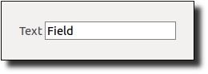

| ||
superclass: object% | ||
|
A single line of text is visible, and a special control event is generated when the user presses Return or Enter (when the text field has the focus) and the event is not handled by the text field’s frame or dialog (see on-traverse-char in top-level-window<%> ).
Multiple lines of text are visible, and Enter is not handled specially.
Whenever the user changes the content of a text field, its callback procedure is invoked. A callback procedure is provided as an initialization argument when each text field is created.
The text field is implemented using a text% editor (with an inaccessible display). Thus, whereas text-field% provides only get-value and set-value to manipulate the text in a text field, the get-editor returns the field’s editor, which provides a vast collection of methods for more sophisticated operations on the text.
The keymap for the text field’s editor is initialized by calling the current keymap initializer procedure, which is determined by the current-text-keymap-initializer parameter.
constructor
(new text-field% [label label] [parent parent] [ [callback callback] [init-value init-value] [style style] [font font] [enabled enabled] [vert-margin vert-margin] [horiz-margin horiz-margin] [min-width min-width] [min-height min-height] [stretchable-width stretchable-width] [stretchable-height stretchable-height]]) → (is-a?/c text-field%) label : (or/c label-string? #f)
parent :
(or/c (is-a?/c frame%) (is-a?/c dialog%) (is-a?/c panel%) (is-a?/c pane%))
callback :
((is-a?/c text-field%) (is-a?/c control-event%) . -> . any) = (lambda (t e) (void)) init-value : string? = ""
style :
(listof (or/c 'single 'multiple 'hscroll 'password 'vertical-label 'horizontal-label 'deleted)) = '(single) font : (is-a?/c font%) = normal-control-font enabled : any/c = #t vert-margin : spacing-integer? = 2 horiz-margin : spacing-integer? = 2 min-width : (or/c dimension-integer? #f) = #f min-height : (or/c dimension-integer? #f) = #f stretchable-width : any/c = #t stretchable-height : any/c = (memq 'multiple style)
如果&出现在label中，则特别解析为button%。
The callback procedure is called when the user changes the text in the text field or presses the Enter key (and Enter is not handled by the text field’s frame or dialog; see on-traverse-char in top-level-window<%>). If the user presses Enter, the type of event passed to the callback is 'text-field-enter, otherwise it is 'text-field.
If init-value is not "", the graphical minimum size for the text item is made wide enough to show init-value. Otherwise, a built-in default width is selected. For a text field in single-line mode, the graphical minimum size is set to show one line, and only the control’s width is stretchable by default. For a multiple-line text field, the graphical minimum size shows three lines of text, and it is stretchable in both directions by default.
The style must contain exactly one of 'single or 'multiple; the former specifies a single-line field and the latter specifies a multiple-line field. The 'hscroll style applies only to multiple-line fields; when 'hscroll is specified, the field has a horizontal scrollbar and autowrapping is disabled; otherwise, the field has no horizontal scrollbar and autowrapping is enabled. A multiple-line text field always has a vertical scrollbar. The 'password style indicates that the field should draw each character of its content using a generic symbol instead of the actual character. 如果style包括'vertical-label，则text field使用控件上方的标签创建；如果style不包括'vertical-label（可选包括'horizontal-label），然后标签创建在text field的左侧。 如果style包括'deleted，则text field将创建为隐藏的，并且它不会影响其父级的几何体；text field稍后可以通过调用parent的add-child方法激活。.
font参数确定控件的字体。 有关enabled参数的信息，请参见window<%>。 有关horiz-margin和vert-margin的信息参数，请参见subarea<%>。 有关min-width、min-height、stretchable-width、stretchable-height以及stretchable-height参数，请参见area<%>。
method
(send a-text-field get-editor) → (is-a?/c text%)
method
(send a-text-field get-field-background) → (is-a?/c color%)
method
(send a-text-field get-value) → string?
method
(send a-text-field set-field-background color) → void?
color : (is-a?/c color%)
method
(send a-text-field set-value val) → void?
val : string?